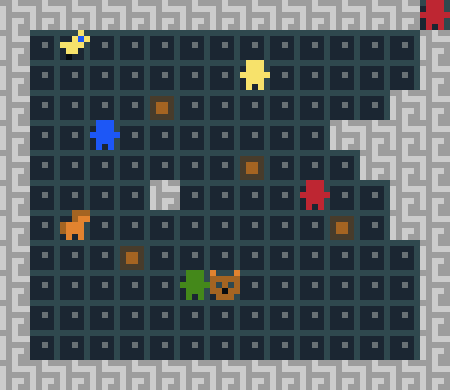
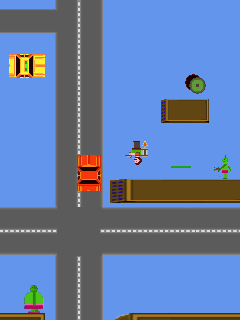

| Un jeu d'infiltration pour 2 joueurs réalisé en 2 jours avec le moteur de jeu puzzlescript pour la Mini ludum Dare 28. Page du projet (en)(lien) Blog du développement (en) |  |
| Prototype de jeu réalisé en quelques jours pour un test d'embauche chez Gameloft. Gameplay basésur la gravité "before it was cool :)", respectant un certain nombre de contraintes imposées. Page du projet (lien) |  |